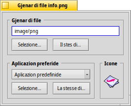
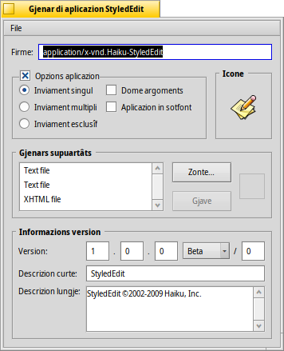

Gjenars di file
Par ce che al rivuarde i gjenars di file Haiku, al contrari di Windows, nol fâs cont su lis 3 letaris de estension dai file (p.e. .txt, .jpg, .mp3). Chest metodi e je dome une ultime risorse di repeç. Haiku al dopre i gjenars MIME propite come che al è costum su internet.
 Stabilî il gjenar par un specific file
Stabilî il gjenar par un specific file
Tu puedis cambiâ il gjenar di un specific file, la sô icone e la aplicazion associade. Selezione il file e, cul tast diestri, clame il component adizionâl tal menù contestuâl .

Il gjenar di file
Chel parsore al è un file PNG, cu la stringhe MIME image/png. Metìs che tu savedis par sigûr che nol è un PNG ma un GIF. Tu puedis modificâ il gjenar o inserint a man la stringhe MIME juste opûr cuntun dai doi botons sot de casele di test:
| al mostre une liste jerarchiche dai gjenars di file dulà che tu puedis lâ su image | GIF Image. | ||
| al vierç un dialic dai file dulà che tu puedis sielzi cualsisei file che al à za il gjenar di file che tu stâs cirint. |
La aplicazion prefereide
Chest menù a tende al mostre une liste di dutis lis aplicazions che a puedins gjesti chest particolâr gjenar di file. Di chi tu puedis sielzi cuâl program al à di vierzi chest specific file cuant che tu i fâsis dopli clic. Par esempli tu puedis cambiâ la aplicazion preferide di un file HTML dal navigadôr a un editôr di tescj intant che tu i stâs lavorant parsore. Ogni altri file HTML si vierzarà ancjemò cul navigadôr, dome chel chi in particolâr al vignarà inviât tal to editôr di tescj.
La e je chê che e je stabilide in maniere globâl par chel gjenar di file. Se tal menù tende no tu cjatis il program che tu desideris associâ cun chest file, di gnûf tu cjatarâs i botons e che al fâs plui o mancul la stesse robe descrite parsore in "Il gjenar di file".
La icone
Se tu ti stâs domandant ce mût mai che il ricuadri de icone al è vueit: lis iconis a vegnin di norme ereditadis di chês predefinidis dal sisteme par chel gjenar di file. Cul component adizionâl Filetype tu puedis vierzi un file che al conten une icone e duncje strissinâle sul ricuadri di icone dal to file. Opûr fâ dopli-clic sul ricuadri de icone e creâ o modificâ la to icone personâl. Par vê plui informazions su lis iconis e ce mût creâlis di bessôl, viôt l'argoment Icon-O-Matic.
Impostazions speciâls pes aplicazions
Se tu clamis in vore il component adizionâl Filetype suntun eseguibil (chi: StyledEdit), tu varâs un dialic diferent:
Parsore tu viodarâs, al puest di une stringhe MIME standardizade, la firme uniche de aplication. Cun chê, il sisteme al cjatarà il program dapardut là che al è instalât.
Sot di chê si à diviersis opzions par controlâ il compuartament de aplicazion:
| Par ogni file eseguibil al è pussibil inviâ dome une istance de aplicazion. Se tu âs dôs copiis di chê aplicazion, dut câs, a puedin jessi eseguidis une in bande di chê altre. | ||
| A puedin zirâ in simultanie tantis istancis de aplicazion. | ||
| E je permetude pardabon dome une istance ae volte che e vedi chê firme di aplicazion. | ||
| Al indiche che la aplicazion no rispuint ai messaçs. | ||
| La aplicazion no vignarà fûr tal Twitcher o te liste des aplicazions dal Deskbar. |
Dopo si à la liste dai gjenars di file supuartâts. Tu puedis zontâ (e gjavâ) i gjenars di file, se tu pensis che la aplicazion ju podedi gjestî. Come consecuence, la aplicazion e vignarà fûr intal menù des aplicazions preferidis o, cuant che tu fasis clic di diestre suntun file di chel gjenar, tal menù contestuâl di Tracker .
In bas si à lis informazions di version e i dirits di autôr. Tant che la firme de aplicazion, a son stâts metûts lì dal autôr de aplicazion e no si varès di alterâju.
Impostazions globâls cu lis preferencis di Gjenars di file
Lis preferencis Gjenars di file no àn a ce fâ cui singui file ma cu lis impostazions globâls dai gjenars di file. Tu puedis cambiâ lis iconis predefinidis e lis aplicazions preferidis o zontâ, gjavâ, o alterâ i atribûts di ducj i gjenars di file. Tu puedis adiriture creâ di zero il to gjenar di file.
Ducj i gjenars di gile e lis lôr configurazions a vegnin archiviâts in /boot/home/config/settings/beos_mime/. Prime di tacâ a sperimentâ, al sarès prudent fâ une copie di backup di chê cartele...
Par imparâ di plui su lis preferencis dai Gjenars di file, viôt il laboratori: Gjenars di file, atribûts, tabele e interogazions.